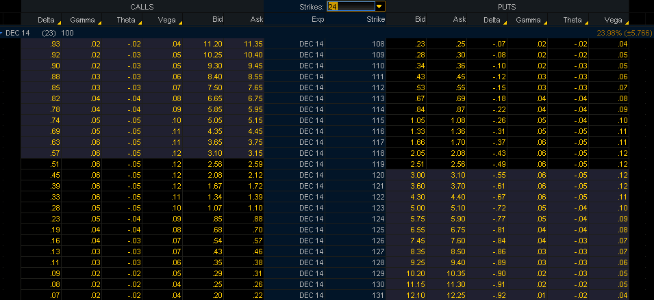
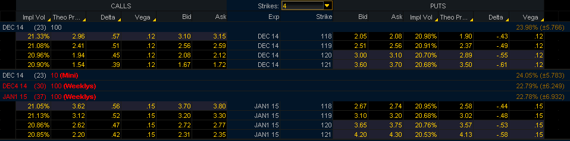

Стоимость опциона определяется многими факторами, такими как цена исполнения, время до погашения и подразумеваемая волатильность, процентные ставки, и дивиденды (в случае опционов на акции и индексы). Риск для каждого, кто покупает или продает опционы, заключается в том, что стоимость опциона изменяется. Его стоимость может измениться, если изменится любой из факторов, определяющих его стоимость. Благодаря математическим моделям оценки стоимости опционов, возможно вычислить влияние изменения любого из этих факторов. Для каждого фактора существует связанный с ним параметр риска. Общее название этих параметров – «Греки». С их помощью мы можем спрогнозировать, как изменится наш опционный портфель (позиция) при изменении подразумеваемой волатильности, цены БА или времени до погашения. Однако, при использовании «греков» существует дополнительная проблема – «греки» тоже изменяются. Они тоже изменяются в результате изменения факторов, определяющих стоимость опциона. Поэтому нам также нужно знать как «греки» изменяются при перемене обстоятельств.
Дельта.
Дельта показывает, как изменится стоимость опциона при изменении цены БА.
Дельта = (Изменение стоимости опциона)/(Изменение стоимости БА)
Обычно дельта выражается в виде процента или дроби. То есть, можно сказать, что дельта опциона равна 0,5 или 50%. Это значит, стоимость опциона изменится на половину изменения в цене БА. Если цена БА вырастет на 100 единиц, то стоимость опциона увеличится на 50. Отрицательная дельта означает, что при росте цены БА, стоимость опциона уменьшится.
- Дельта – коэффициент хеджа. Если мы хотим «обнулить» риск, связанный с дельтой, мы используем базовый актив. Значение дельты определяет, какое количество базового актива нам надо использовать для хеджирования. Например, если значение дельты равно 30%, то это означает, что мы должны использовать 3 лота базового актива на каждые 10 лотов опционов.
- Дельта примерно равна вероятности того, что опцион окажется в деньгах. Например, опцион с дельтой 5% имеет вероятность равную примерно 5% оказаться в деньгах на момент погашения. Опцион с дельтой 50% (опцион «около денег») имеет одинаковые шансы на момент погашения быть «в деньгах» или «без денег».
- Дельта равна эквивалентной позиции в базовом активе. Например, если дельта опциона равна +25%, то это значит, что каждые купленные 100 лотов опционов соответствуют купленным 25 лотам базового актива.
Значения дельты различных опционов.
Дельта опционов колл положительная, а опционов пут – отрицательная. Это должно быть понятно, если вспомнить основное определение дельты. Если цена базового актива падает, то это однозначно уменьшает стоимость опциона колл, и увеличивает стоимость опциона пут.
Абсолютное значение дельты опционов «в деньгах» больше 50%. Дельта опционов «глубоко в деньгах» стремится к 100%, означая, что их стоимость изменяется один-в-один с ценой БА, и что вероятность оказаться в деньгах у этих опционов 100%.
Абсолютное значение дельты опционов «около денег» равно 50%.direction:
Абсолютное значение дельты опционов «без денег» ниже 50%. Дельта опционов «далеко без денег» стремится к 0, отражая тот факт, что вероятность этих опционов оказаться в деньгах очень и очень не велика.
Абсолютное значение дельты опционов «без денег» обычно выше для опционов с большим сроком до погашения (при равенстве всех остальных параметров). Это должно быть интуитивно понятно, потому что опцион «без денег» с большим сроком до погашения имеет больше шансов оказаться в деньгах, чем опцион с таким же страйком, но меньшим сроком до погашения.
Сумма дельты опциона колл и абсолютного значения дельты опциона пут с одинаковыми страйками равна 100%.
Дельта опционной стратегии.
Дельта опционной стратегии (комбинации различных опционов) – сумма дельт всех входящих в позицию опционов.
Например, дельта синтетического фьючерса будет равна 1 или 100%. Если дельта колла равна 0,6, то дельта соответствующего пута будет равна -0,4. А чтобы получить синтетический фьючерс нужно купить колл и продать пут. Соответственно, дельта этой стратегии будет равна 0,6 – (-0,4) = 1.
А, например, дельта стрэнгла или стрэддла может быть равна 0, потому что коллы и путы продаются или покупаются вместе, и их дельты могут полностью или почти полностью аннулировать друг друга.
Короче, позиция, состоящая из длинного колла и короткого пута, будет обладать положительной дельтой, а позиция, состоящая из короткого колла и длинного пута, - отрицательной дельтой.
Факторы, влияющие на дельту.
- Дельта опционов колл положительна, опционов пут – отрицательна.
- Цена базового актива влияет на дельту опциона. В случае опционов колл, чем выше цена базового актива, тем больше дельта. В случае опционов пут, чем ниже цена базового актива, тем выше абсолютное значение дельты.
- Время до погашения тоже влияет на дельту. В случае опционов «без денег», чем больше времени до погашения, тем больше абсолютное значение дельты (вероятность оказаться в деньгах выше, чем больше времени до погашения). У опционов колл «около денег» дельта близка 0,5 (50%), а у опционов пут «около денег» дельта около -0,5 (-50%). В случае опционов «в деньгах», чем больше времени до погашения, тем меньше абсолютный уровень дельты. Потому что, больше шансов оказаться «без денег». Или по другому, потому что абсолютное значение дельты опционов «без денег» растет с увеличением времени до погашения; а сумма дельт опционов пут и колл одного страйка должна равняться 100%, то, соответственно, дельта опционов «в деньгах» должна уменьшаться.
- Чем выше подразумеваемая волатильность, тем больше дельта опционов «без денег», и тем меньше дельта опционов «в деньгах». Повышение уровня подразумеваемой волатильности аналогично увеличению срока до погашения.
Вега.
Вега показывает, как изменится стоимость опциона при изменении подразумеваемой волатильности.
Вега = (Изменение стоимости опциона)/(Изменение подразумеваемой волатильности)
Подразумеваемая волатильность – один из ключевых факторов, определяющих стоимость опциона, поэтому очень важно понять, как ее изменение влияет на стоимость опционной позиции (опционного портфеля). Любое увеличение подразумеваемой волатильности увеличивает стоимость опциона, независимо колл это или пут.
Вегу обычно выражают через число пунктов изменения стоимости опциона на каждый процентный пункт изменения волатильности. Если вега опциона 0,1, то с ростом (уменьшением) волатильности на 1 процентный пункт стоимость опциона увеличится (уменьшится) на 0,1. Если стоимость опциона = 1,45 при 20%-й волатильности, то при волатильности 21% его стоимость составит 1,55; а при волатильности 19% - 1,35.
Значения веги различных опционов.
Если посмотреть на рис.1, то можно увидеть, что веги опциона колл и опциона пут с одинаковым страйком одинаковы. Вега опционов «около денег» имеет наибольшее значение. А чем больше опцион становится «без денег», тем меньшим становится значение веги. И этому есть не только математическое объяснение, но и интуитивное. Вспомним, что вега – это изменение стоимости опциона при изменении подразумеваемой волатильности, и зададим себе вопрос: Стоимость каких опционов изменится в большей степени при изменении подразумеваемой волатильности? Изменение в подразумеваемой волатильности означает, что оценка ожидаемой волатильности цена базового актива на период до погашения опциона изменилась. И это будет иметь наибольшее влияние на опционы «около денег». Чтобы понять это, давайте сравним опцион «около денег» и опцион «далеко без денег». Увеличение подразумеваемой волатильности на 1% не окажет существенного влияния на опцион «глубоко без денег», он как был «глубоко без денег», так таким и останется. В тоже время опцион «около денег» балансирует на грани: быть ему «в деньгах» или «без денег». 1%-е увеличение подразумеваемой волатильности определенно увеличит его стоимость, так как он очень чувствителен к изменениям подразумеваемой волатильности. Другими словами, опцион «около денег» имеет более высокую вегу по сравнению с опционом «глубоко без денег». В рамках одной опционной серии ни один опцион не имеет большую вегу, чем опцион «около денег». И это можно увидеть на рис.1.
 Рисунок 1. "Греки" опционов колл и пут.Вега также увеличивается по мере увеличения срока до погашения. Если сравнить два опциона с одинаковым характеристиками, и единственным отличием в сроке до погашения, то можно увидеть, что вега опциона с большим сроком до погашения больше веги опциона с меньшим сроком до погашения. Смотри рис.2.
 Рисунок 2.
Попробуем опять интуитивно понять, почему это так. Рассмотрим два опциона «глубоко без денег». Один опцион имеет срок погашения 1 минута, а второй – 1 год. Стоимость одноминутного опциона не изменится сильно в результате незначительного изменения подразумеваемой волатильности. Вероятность того, что это изменение сильно увеличит или уменьшит шансы этого опциона оказаться «в деньгах» очень мала, поэтому его стоимость почти не изменится. Или, одноминутный опцион обладает маленькой вегой, потому что изменение его стоимости в результате изменения подразумеваемой волатильности незначительно.
В тоже время стоимость годового опциона может измениться значительно, у изменения подразумеваемой волатильности есть много времени чтобы оказать эффект на стоимость опциона. Другими словами, у этого опциона вега больше.
Вега опционной стратегии.
Чтобы определить суммарную вегу опционной стратегии, складываем веги всех длинных опционов, и вычитаем веги всех коротких. Например, вега вертикального «бычьего» колл-спреда: вега опциона колл с более низким страйком (купленного) минус вега опциона колл с более высоким страйком (проданного).
Мы можем ассоциировать вегу позиции как количество рублей (долларов, и т.п.), которое мы заработаем или потеряем, если подразумеваемая волатильность (на каждом страйке) изменится на 1%. Например, если вега нашей позиции = $1000, то при росте подразумеваемой волатильности на 1% мы заработаем $1000; а в случае падения подразумеваемой волатильности на, например, 5%, мы потеряем $5000.
Но нужно помнить, что это полностью обосновано, если подразумеваемая волатильность каждого опциона изменяется одинаково. То есть, суммирование значений веги двух опционов колл имеет смысл, если эти опционы выписаны на один базовый актив, имеют одинаковую дату до погашения, и их страйки расположены не далеко друг от друга. А если опционы выписаны на разные базовые активы, или имеют различные сроки до погашения, то суммирование их вег имеет смысл, если подразумеваемые волатильности этих опционов изменяются, как минимум, почти идентично.
Факторы, влияющие на вегу.
- Вега – это не фиксированная величина. Она изменяется при изменении ситуации.
- Подразумеваемая волатильность: на вегу влияют изменения в подразумеваемой волатильности.
- Изменение цены базового актива: вега опциона (а соответственно и опционной стратегии) изменяется с изменением цены базового актива. Чем ближе опцион становится «около денег», тем выше становится его вега.
Вега – это один из основных рисков при опционной торговле. Подразумеваемая волатильность постоянно изменяется, а так как это один из основных факторов, определяющих стоимость опционов, то ее воздействие на стоимость опционного портфеля необходимо понимать.
Гамма.
Гамма показывает, как изменится значение дельты при изменении цены базового актива.
Гамма = (Изменение дельты)/(Изменение цены БА)
Обычно гамму выражают через изменение дельты на 1 пункт изменения цены БА. Например, если дельта опциона равна 0,5, а гамма равна 0,1, то при увеличении цены БА на 1 пункт дельта опциона изменится до 0,6. А при уменьшении цены БА на 1 пункт дельта опциона станет равна 0,4.
Гаммы всех опционов на один БА суммируются без ограничений. В то время как веги опционов можно суммировать, если есть уверенность в идентичном (или почти идентичном) изменении их подразумеваемых волатильностей, гаммы можно суммировать без оглядки на это. Это связано с тем, что гамма связана с изменением цены БА, а не с изменением подразумеваемой волатильности. А изменение цены БА одинаково для всех опционов, привязанных к этому БА.
Значения гаммы различных опционов.
Гамма имеет наибольшее значение «около денег». Чем больше опцион становится «без денег» или «в деньгах», тем меньшей становится его гамма. И этому тоже есть интуитивное объяснение. Вопрос: При изменении цены БА дельта какого опциона изменится в большей степени? Снова рассмотрим два опциона: «глубоко без денег» и «около денег». У опциона «глубоко без денег» абсолютное значение дельты минимально, так как дельта – это вероятность того что опцион окажется в деньгах. Если цена БА изменится на 1 пункт, окажет ли это сильное влияние на дельту этого опциона? Конечно, нет. Этот опцион «глубоко без денег», и цена БА должна измениться очень значительно, чтобы существенно увеличить вероятность оказаться в деньгах. А у опциона «около денег» при изменении цены БА на 1 пункт дельта определенно изменится. Этот опцион при небольшом движении цены БА может стать либо «в деньгах» либо «без денег», поэтому его дельта очень чувствительна к изменениям цены БА. То есть, гамма опциона «около денег» больше, чем гамма опциона «без денег».
Гамма увеличивается при приближении экспирации. То есть, если опционы различаются только сроками погашения, то у опциона с большим сроком гамма будет меньше, чем у опциона с более коротким сроком. Опять рассмотрим два опциона «около денег»: с погашением через 1 минуту и 1 год. Даже при незначительном изменении цены БА дельта одноминутного опциона может измениться либо до 0, либо до 1, потому что вероятность оказаться в деньгах у такого опциона очень чувствительна к изменениям в цене БА. Другими словами, гамма этого опциона очень высока. В случае одногодичного опциона незначительное изменение цены БА вряд ли приведет к изменению его дельты. В «одногодовой» перспективе такое изменение в цене БА очень незначительно изменит вероятность оказаться «в деньгах» или «без денег». То есть, гамма этого опциона мала.
Гамма опционной стратегии.
Чтобы определить суммарную гамму опционной стратегии, складываем гаммы всех длинных опционов, и вычитаем гаммы всех коротких. Однако нужно помнить, что гамма опционной стратегии изменяется по мере изменения цены БА.
Факторы, влияющие на гамму.
- Время. По мере приближения к дате экспирации гамма опционов «около денег» увеличивается экспоненциально от почти 0 (большой срок до погашения) до почти бесконечности (за секунды перед экспирацией). Для опционов «без денег» картина более сложная. По мере приближения даты погашения их гамма в начале увеличивается, а затем, начинает уменьшаться. Это происходит потому, что к экспирации гамма опционов «без денег», наряду с другими «греками», должна полностью исчезнуть.
- Подразумеваемая волатильность. Чем выше подразумеваемая волатильность, тем ниже гамма. Это просто запомнить, если вспомнить, что увеличение подразумеваемой волатильности оказывает такой же эффект как и увеличение срока экспирации.
- Цена БА. Гамма изменяется при изменении цены БА. Любое изменение цены БА делает опционы ближе или дальше от «около денег», соответственно изменяется и их гамма.
В каком-то смысле гамма-риск менее значим, чем, например, вега-риск. Можно оценить вегу позиции и сделать точный расчет о размерах риска, не оглядываясь на другие «греки». В случае гамма-риска это сделать труднее. Частично потому, что мы можем конкретно увидеть потери от гаммы, если мы продаем опционы (т.е. продаем гамму). Мы не можем потерять деньги, если у нас длинная гамма, а в случае веги мы можем потерять деньги в обоих случаях. Это является прямым результатом того, как гамма себя проявляет и влияет на наш опционный портфель.
Но такой подход к оценке гамма-риска не является правильным. Более правильно рассматривать гамму как неразрывно связанную с тетой, чтобы полностью понимать ситуацию. Например, если наша позиция имеет короткую гамму, мы должны посмотреть, какое количество теты (временного распада) мы зарабатываем в качестве компенсации за наш гамма-риск. Или, если наша позиция длинная по гамме, мы должны посмотреть, какое количество теты (временного распада) мы теряем в качестве платы за положительную гамму. То есть, когда опционный трейдер говорит, что гамма его позиции, например, опционы на нефтяные фьючерсы = 100; это дословно означает, что дельта его позиции изменится на 100 фьючерсов при изменении цены нефти на 1 пункт. Но риск его позиции не совсем ясен пока нет информации о тете позиции. «Гамма моей позиции = 100, и тета = -$1000» - более полная оценка гамма-риска.
Тета.
Тета показывает, как изменится стоимость опциона при изменении времени до погашения.
Тета = (Изменение стоимости опциона)/(Изменение времени до погашения)
Время до экспирации – один из ключевых факторов, определяющих стоимость опциона. Поэтому очень важно понимать, как оно влияет на стоимость опционной позиции (портфеля).
Уменьшение времени до экспирации уменьшает стоимость любого опциона.
Тета обычно выражается в пунктах снижения стоимости опциона за день в отсутствие иных изменений на рынке. Опцион с тетой 0,05 теряет ежедневно 0,05 своей стоимости, если при этом не происходит никаких других изменений в рыночных условиях. Если сегодня этот опцион стоит 2,75, то завтра он будет стоить 2,70, а послезавтра – 2,65.
Теты опционов можно складывать без ограничений. Это возможно, так как тета представляет собой количество рублей (долларов, и т.п.) на которые уменьшается наша опционная позиция (портфель) каждый день, и это не зависит на какой базовый актив выписан опцион.
Суммарная тета позиции – сумма всех тет индивидуальных опционов.
Время движется только в одном направлении, и технически тета – величина положительная. Однако для удобства и с целью напоминания о том, что тета показывает снижение стоимости опциона со временем, иногда ее пишут со знаком «минус». Тету опциона, теряющего ежедневно 0,05, будем обозначать как -0,05. Следовательно, у длинной опционной позиции тета всегда будет отрицательной, а у короткой – положительной. Тогда как у гаммы все наоборот, у длинной опционной позиции – гамма положительная, а у короткой – отрицательная.
Значения теты различных опционов.
Опционы «около денег» обладают наибольшей тетой, по мере того как страйк все дальше и дальше уходит от «около денег» тета опционов уменьшается. Попробуем понять это интуитивно. На какие опционы уменьшение времени до экспирации оказывает наибольшее влияние? Уменьшение времени до погашения означает, что вероятность оказаться «в деньгах» для опциона уменьшается. Как и ранее, рассмотрим два опциона: «глубоко без денег» и «около денег». Как уменьшение времени до погашения на один день повлияет на опцион «глубоко без денег»? Ответ: почти никак. Вероятность этого опциона оказаться «в деньгах» почти не изменилась. А опцион «около денег» балансирует на грани: быть «в деньгах» или «без денег», поэтому он очень чувствителен к изменению времени до погашения. Другими словами, тета опциона «около денег» выше, чем тета опциона «глубоко без денег».
Тета опциона с большим сроком до погашения меньше, чем тета опциона с тем же страйком, но более коротким сроком до погашения.
Тета опционной стратегии.
Чтобы определить тету опционной стратегии, нужно сложить значения теты всех опционов, составляющих эту позицию. Однако нужно помнить, тета опционной стратегии не постоянна. В частности, опционный трейдер должен знать, как изменится тета позиции по мере изменения цены БА.
Факторы, влияющие на тету.
- Время. По мере приближения даты экспирации тета опционов «около денег» увеличивается экспоненциально, от почти нуля (для опционов с большим сроком до погашения) до почти бесконечности (для опционов за мгновения до экспирации). Тета опционов «без денег» обычно увеличивается по мере приближения даты погашения, но затем, в некоторой точке, тета начинает опять уменьшаться, потому что эти опционы к этому времени теряют почти всю свою стоимость.
- Подразумеваемая волатильность. Чем выше подразумеваемая волатильность, тем больше тета.
- Цена БА. Изменения цены БА влияют на то, превращают опционы «около денег» в опционы «в деньгах» или «без денег».
Об операциях с «греками» опционов с различными сроками до истечения.
Основное правило при операциях с «греками» опционов с различными сроками до истечения следующее: когда базовые риски изменяются более-менее одинаково для различных опционных серий, сложение или вычитание «греков» имеет практический смысл. Например, дельты двух опционов с различными сроками до погашения, выписанных на один БА, можно складывать вместе, чтобы найти суммарный дельта-риск. Это имеет смысл, потому что для этих опционов базовый риск один (у них один и тот же БА), и когда цена на этот БА изменяется, она влияет на оба опциона, через их дельты, сопоставимым образом. А когда базовые риски не изменяются одинаково, сложение и вычитание греков не имеет практического смысла. Например, сложение вег опционов с различными сроками до погашения имеет смысл, если подразумеваемые волатильности (базовый риск в этом случае) изменяются идентично. Такие изменения могут случаться, но это, скорее, исключение, чем норма. Более распространенный вариант – это когда подразумеваемая волатильность опционов с более близким сроком до погашения выше, чем у опционов с дальним сроком до погашения. Это значит, что 1000 рублей вега-риска у более близких к погашению опционов нельзя точно сравнить с 1000 рублей вега-риска более дальних опционов, и поэтому их сложение или вычитание не очень полезная риск-метрика.
Дельту и гамму можно складывать без особых опасений, потому что БА один и тот же. Складывая веги нужно рассматривать каждый случай отдельно. Тета тоже складывается, так как время изменяется для всех опционов одинаково. Процентный риск (ро) и дивидендный риск обычно нет, так как эти факторы риска обладают своей собственной временной структурой.